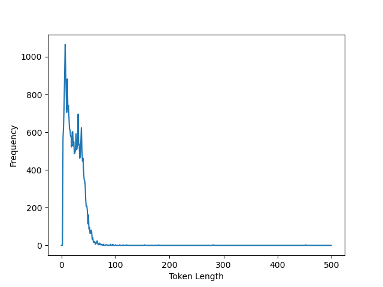

Improving the Classification of General Public and Institutional Twitter Users with Transformers
Introduction
Twitter is an interesting data source for computational communication scientists. The Twitter API makes it comparably easy to obtain large amounts of text data. This enables Big Data analyses for various purposes, but comes with its own challenges. For example, Twitter users might not be representative of the general offline population, some Twitter accounts might even be fictious (Ahmed, Bath, and Demartini 2017). Additionally, the detection of bots has triggered a lot of research (e.g. Kudugunta and Ferrara 2018). When researchers analyze Twitter data, they may want to exclude these cases from their datasets. In other cases, they might want to isolate users from a certain country (Kwon, Priniski, and Chadha 2018) or gender (Vashisth and Meehan 2020), depending on the particular research questions.
Another differentiation between Twitter users, which can potentially impact the findings of a given research question is the separation of general public and institutional users. Institutional accounts differ from general public accounts in that they might represent a (governmental) institution, the media, or some other kind of organization. Generally, communication on Twitter can be social or non-social and spontaneous or strategic. When researchers are mainly interested in natural communication between individuals, they might want to filter out the institutional users first (Kwon, Priniski, and Chadha 2018). This filtering can also be helpful for recommendation engines, products opinion mining tools etc. (Daouadi, Rebaï, and Amous 2018). As institutional accounts make up 9% of Twitter accounts (McCorriston, Jurgens, and Ruths 2015) they can skew a given sample of Tweets significantly.
Defining who is a general public and who is an institutional user is not trivial and different approaches exist in the literature. Li et al. (2018) aimed at differentiating between male, female and brand-related Twitter users. Yan, Ma, and Yoshikawa (2013) detected open and closed accounts, where open accounts publish information to the public, with their goal being to promote products, services or themselves. Closed accounts on the other hand publish information about their daily lives and use Twitter to communicate with their friends. McCorriston, Jurgens, and Ruths (2015) created a tool to distinguish between organizational and individual accounts but did not define their definition of organizational in detail. Lastly, De Choudhury, Diakopoulos, and Naaman (2012) split Twitter users into ordinary individuals, organizations, and journalists/media bloggers.
The existing diversity and opacity in defining user categories is not ideal. There is potential for a unified system of deciding which users belong to which group to make it easier for researchers to filter out institutional users and make research more comparable.
Some actual differences between institutional and general public users have been highlighted by Kwon, Priniski, and Chadha (2018). In their study, general public users showed more retweeting than institutional users, less analytic language use and more affective language use.
Overall, for the above mentioned reasons, there is a need for reliable classification models, allowing researchers to filter out institutional accounts when their target sample should only contain general public users. Several techniques for this purpose have already been introduced. They will be presented in the next section.
Literature Review
Existing Classifiers
Li et al. (2018) introduced TWIROLE, which uses Twitter users’ name, description, the follower-friend ratio, profile image and Tweets as features for a hybrid classifier. The text features are rather simple and frequency based in this case.
McCorriston, Jurgens, and Ruths (2015) used post content, stylistic as well as structural and behavioral features for their classifier. The text features they implemented were mostly frequency-based, the other non-text features were numerical. All features were then fed into a support vector machine for classification
Daouadi, Rebaï, and Amous (2018) did not use textual features at all. Their features were solely statistical-based and included measures like the number of followers, liked tweets, posts per day etc.
Kwon, Priniski, and Chadha (2018) trained a classifier solely based on Twitter profile descriptions. They used the sci-kit learn package in python and their representations of each profile text only considered the 500 most frequent terms in the data. Thus the representation of each profile text was a 500 dimensional sparse vector containing the raw frequencies for the top 500 most frequent words. A random forest classifier was then used to separate general public profiles from institutional accounts.
None of the approaches we could find used dense (pretrained) text embeddings or transformers. However, using such techniques yields high potential when working with natural language, as can be found in Twitter data.
Wankmüller (2022) illustrated this potential of neural transfer learning using transformers for text analysis in the social sciences. Transfer learning refers to a setting where something that has been learned in one situation is exploited in another situation (Goodfellow, Bengio, and Courville 2016). For transformer models such as BERT or RoBERTa, pretrained weights and token embeddings are freely available online. These models have been trained with enormous amounts of data on well-designed pretraining tasks. Researchers can use these pretrained encoders to obtain dense representations of their text data. These features can then contain more information than conventional, more simple text representations, as they use the knowledge inherent in the huge text corpora used for pretraining the transformer models. They can then be fed into a smaller model which is then trained on the actual task the researcher is interested in. This can improve the prediction performance on different NLP tasks (Wankmüller 2022).
Study Goal
We believe that the advantage of using transformers with transfer learning also holds for the task of Twitter user classification into general public and institutional users. When text data is available, it is reasonable to expect that the usage of pretrained word embeddings and encoders can leverage performance. Using a pretrained BERT model is especially promising in our case, because of the availability of BERTweet, which is based on the RoBERTa pre-training procedure and has been trained on 850 million English Tweets. It is very large, consisting of 135 million parameters (Nguyen, Vu, and Nguyen 2020).
The goal of this work is to show the advantages of transformer models over conventional machine learning techniques in user classification. In order to do that we tried to locate the datasets used by previous classification models and attempted to surpass the original authors’ performance by using BERTweet for generating text features. The only dataset used for training the presented classifiers we could find available online was that used by Kwon, Priniski, and Chadha (2018), who used Twitter profile descriptions as the sole input for their classifier.
To be precise, the authors used five different datasets which were collected in the context of different events (boston, brussels, mesa, quebec, random). They trained one model per dataset and then evaluated the performances within the same dataset as well as the classifiers’ generalization across the other datasets.
Hypotheses
As the profile descriptions are the only input used, we expected BERTweet to achieve a better performance than the classifier in the original study. Thus, we defined our hypotheses as follows:
By designing our own classifier, using the BERTweet encoder to generate dense and meaningful representations of Twitter profile descriptions, we expect to achieve:
H1.A: a better performance on the boston test set, when trained on the boston training set than in the original study.
H1.B: a better performance on all other test sets, when trained on the boston training set than in the original study.
H2.A: a better performance on the brussels test set, when trained on the brussels training set than in the original study.
H2.B: a better performance on all other test sets, when trained on the brussels training set than in the original study.
H3.A: a better performance on the quebec test set, when trained on the quebec training set than in the original study.
H3.B: a better performance on all other test sets, when trained on the quebec training set than in the original study.
H4.A: a better performance on the random test set, when trained on the random training set than in the original study.
H4.B: a better performance on all other test sets, when trained on the random training set than in the original study.
Method
Data
The dataset used by Kwon, Priniski, and Chadha (2018) consisted of three variables. The first column description contained the Twitter profile descriptions as strings. The second column is_gen_pub listed the labels (institutional=0, general public=1). The third column contained the source and thus allowed to split the dataset into the five smaller datasets boston, brussels, mesa, quebec, and random.
Overall the dataset consisted of 8945 cases. Out of those, 2000 belonged to the boston dataset, 2008 to brussels, 918 to mesa, 1998 to quebec and 2021 to random. Unfortunately, we spotted an error in the mesa data. All annotations carried the label 1, and there were no negative cases. Thus, we decided, to remove the mesa data from our analysis. This sparked doubt about the reliability of the other datasets as well. However, for the other sources, the distribution of positive and negative cases matched the description of Kwon, Priniski, and Chadha (2018) making them seem reliable enough for us to analyze.
Preprocessing
In a first step, we cleaned the dataset. The labels were created through manual annotation by different raters. Because of that, the dataset contained some duplicate cases, where the same profile description had received different labels. As inconsistent labels can hurt machine learning, we decided to handle these cases as follows. First we split the dataset into the five smaller datasets based on the source column. Then, under the assumption that the majority label is the correct one, we replaced multiple occurrences of the same profile description with a single row containing the description and the majority class as label. An equal amount of positive and negative ratings resulted in the assignment of the positive class (1). The dataset sizes before and after cleaning are shown in Table 1.
| Dataset | Before | After |
|---|---|---|
| boston | 2000 | 1675 |
| brussels | 1997 | 1997 |
| quebec | 1998 | 1751 |
| random | 2021 | 2003 |
In the last step, each of the five datasets was split into a training, validation, and test set. In the original paper, Kwon, Priniski, and Chadha (2018) used an 80/20 split to create a training and test set. As using BERTweet requires defining some hyperparameters, we decided to create a validation set as well. Thus, we used a split of 70/10/20 for the training, validation, and test set. Before splitting the data, we randomly shuffled it, to avoid different label distributions between the sets. It would have been advantageous if the train-test split from the original paper had been known to rule out any other reasons for the expected difference in performance when using BERTweet. However, as Kwon, Priniski, and Chadha (2018) used the scikit learn library for training, it is likely that they shuffled the data as well before training. Overall, as the shuffling is random, it should not make a big difference.
Tokenization
BERTweet offers its own tokenizer (Nguyen, Vu, and Nguyen 2020). It is recommended to use it as this is the tokenizer that was used during pretraining. For example, the tokenizer would transform the input:
‘Feminist. Proud liberal. Pro-love. Colin Morgan fan. Book lover. History geek. Cat person. Chocolate eater. Apparently a snowflake. #TheResistance #ImpeachTrump’
into the following tokens:
‘Femin@@’, ‘ist@@’, ‘.’, ‘Proud’, ‘liber@@’, ‘al.’, ‘Pro-@@’, ‘love@@’, ‘.’, ‘Colin’, ‘Morgan’, ‘fan@@’, ‘.’, ‘Book’, ‘lo@@’, ‘ver@@’, ‘.’, ‘History’, ‘gee@@’, ‘k@@’, ‘.’, ‘Cat’, ‘person@@’, ‘.’, ‘Chocolate’, ‘ea@@’, ‘ter@@’, ‘.’, ‘Apparently’, ‘a’, ‘snow@@’, ‘fla@@’, ‘ke@@’, ‘.’, ‘#TheResistance’, ‘#ImpeachTrump’.
Tokens in this case are not always whole words but can be smaller parts of words. A token continued by another that is still inside the same word is indicated by an @-symbol. Inputs not understood by the tokenizer receive a special unknown-token. When using BERTweet, one has to decide on a maximum input length to feed to the model. The largest length (meaning the number of tokens) the model can take is 128. The distribution of the number of tokens per profile description in all five datasets is shown in Figure 1.

Using hyperparameter optimization we tried three different configurations of 90, 100 and 128 as the maximum sequence length. Any profile description longer than this would be cut at the maximum length and every description shorter than this would be filled up to this maximum length using a special padding token.
Model
As described above, the BERTweet pretrained transformer model was used to obtain a meaningful representation of the profile descriptions. This representation was dense (meaning it consisted of float numbers) and 768-dimensional.
These features were then fed into a simple linear classifier with two output neurons and a bias. The classifier thus consisted of 1537 parameters. The outputs were fed as logit values into PyTorch’s cross entropy loss function. From there the loss was backpropagated only through the classifier. The parameters of BERTweet remained unchanged throughout the training process.
Training
For training, the PyTorch Lightning library was used together with huggingface’s nlp and transformers libraries. The creation of our study’s results consisted of two parts. First the model was trained on the training set. During this, a hyperparameter search was conducted to find the ideal hyperparameter configuration. The hyperparameters and their corresponding search spaces are shown in Table 2.
| Parameter | Search Space |
|---|---|
| Learning Rate | [1e-5 ; 1e-1] |
| Momentum | [0.01; 0.99] |
| Batch Size | [4 ; 64] |
| Sequence Length | [90 , 100 , 128] |
For hyperparameter optimization, the HyperbandPruner from the optuna library was used, taking the validation loss as the evaluation criterion. Due to computational limitations, the search only ran for 10 trials and 40 epochs per dataset (boston, brussels, mesa, quebec, and random). A more thorough investigation over more epochs and more trials would likely result in a more optimal configuration than the one we found.
The results of the hyperparameter search are shown in Table 3.
| Dataset | Learning Rate | Momentum | Batch Size | Sequence Length |
|---|---|---|---|---|
| boston | 0.0088 | 0.4863 | 33 | 100 |
| brussels | 0.0837 | 0.5388 | 60 | 100 |
| quebec | 0.0646 | 0.6405 | 15 | 128 |
| random | 0.0429 | 0.7009 | 21 | 100 |
Once the best hyperparameter configuration was identified, within each dataset, a model was trained on the training data and tested on the test data. The maximum number of epochs for training was 500. Also, an early stopping mechanism had been implemented. The model would train until the validation loss did not increase anymore for ten epochs. Then the model parametrization from the epoch with the lowest validation loss would be used for testing on the test dataset.
Our evaluation criteria for the test set were the same as in the original study. We measures accuracy, precision, recall, and F1 score. The results of the study are presented in the next section.
Results
The results of our study are shown in Table 4.
| Train | Test | A | P | R | F1 |
|---|---|---|---|---|---|
| boston | boston | .803 | .777 | .951 | .855 |
| brussels | .817 | .837 | .924 | .878 | |
| quebec | .923 | .951 | .966 | .958 | |
| random | .863 | .874 | .980 | .924 | |
| brussels | brussels | .839 | .851 | .939 | .893 |
| boston | .812 | .777 | .971 | .863 | |
| quebec | .932 | .951 | .975 | .963 | |
| random | .873 | .892 | .968 | .928 | |
| quebec | quebec | .935 | .941 | .991 | .965 |
| brussels | .781 | .783 | .962 | .863 | |
| boston | .731 | .700 | .981 | .817 | |
| random | .860 | .861 | .997 | .924 | |
| random | random | .873 | .903 | .953 | .927 |
| brussels | .754 | .895 | .744 | .813 | |
| boston | .719 | .725 | .873 | .792 | |
| quebec | .775 | .955 | .791 | .865 |
For comparison, the results of the original study are shown in Table 5.
| Train | Test | A | P | R | F1 |
|---|---|---|---|---|---|
| boston | boston | .830 | .836 | .877 | .856 |
| brussels | .736 | .876 | .736 | .800 | |
| quebec | .806 | .923 | .851 | .886 | |
| random | .685 | .852 | .760 | .803 | |
| brussels | brussels | .828 | .874 | .889 | .881 |
| boston | .794 | .762 | .935 | .840 | |
| quebec | .869 | .919 | .934 | .926 | |
| random | .704 | .859 | .778 | .817 | |
| quebec | quebec | .889 | .914 | .966 | .939 |
| brussels | .811 | .827 | .931 | .876 | |
| boston | .770 | .732 | .950 | .827 | |
| random | .792 | .848 | .919 | .882 | |
| random | random | .743 | .867 | .827 | .847 |
| brussels | .616 | .751 | .714 | .732 | |
| boston | .586 | .636 | .764 | .694 | |
| quebec | .677 | .897 | .725 | .802 |
To evaluate whether the results support our hypotheses, we have to look at four different performance measures. Kwon, Priniski, and Chadha (2018) measured Accuracy, Precision, Recall, and F1 to evaluate the performance of their model.
To simplify our hypotheses, we expected improvements in all four measures by using transformers and transfer learning.
As to H1.A, our expectation did not hold. Only Recall is improved compared to the original study, the other measures show lower values.
For H1.B, our expectation of a consistently improved generalization performance also did not hold. However, that is only due to a slightly worse precision when training on the boston data and testing on the brussels dataset. All other measures were improved compared to the original study.
H2.A again is not fully supported by the data. The precision is slightly worse when training and testing on the brussels data.
However, the findings support H2.B, as the generalization performance is consistently increased, across all measures and all other datasets.
The findings also support H3.A, as the performance is consistently improved when training and testing on the quebec data.
This is not the case for the generalization performance (H3.B). Only generalization on the random data is consistently better, most other measures are worse than in the original.
Finally, H4.A and H4.B are consistently supported by the data. The performance is better across the board in this case.
Discussion
Overall, the study had mixed results. We were successful in improving performance for several train and test dataset combinations and measures. However, there is still room for improvement.
There are several options one could try to further maximize the performance. Most importantly, we recommend conducting a more thorough hyperparameter search. We only tried 10 different random configurations. Given more computational resources, by trying for example 100 configurations instead, it would likely be possible to find even better hyperparameter settings which would lead to an improved performance. Another option would be to try different optimizers, as we only used PyTorch’s SGD optimizer in our study. One could also attempt to conduct stopword removal, which we did not implement.
The reason we did not try these optimizations, was the limited computational resources available to us. This is also, in our opinion, the main disadvantage of training large models like the one used by us. Even though we only trained the classification head of our model, consisting of about 1500 parameters, training took considerable time. This is likely due to the millions of parameters of the BERTweet model, which results in the forward pass alone being rather complex and time as well as resource intensive.
However this issue mostly only affects the training of the model. Once trained, the finished model can be used rather efficiently to make predictions for unseen cases.
We provide our documented code in order to help other researchers aiming at further improving the performance of our model.
In summary, we believe to have shown the potential of using transformers with transfer learning when working with text data.
We believe that, given enough time and resources, transformers can help classify users as either general public or institutional by using the potential of pretrained encoders resulting in useful and informative features.
Our training setup is rather simple and can be adapted by other researchers for training their own models. By that, we hope to contribute to the further improvements of automated classification of Twitter users and help future research relying on it.
Sources
All the data and code used to create this report can be found at TODO
#TODO publish github repo
#TODO: read over everything again and make it sound concise.
#TODO: in the end check if figures are numbered correctly after rendering to pdf/html!!!